What a child becomes after the morning, and how you prove it.
Mastery-based academics handle the floor. Above it, scores are table stakes.
Find the spike. Build it. Prove it.
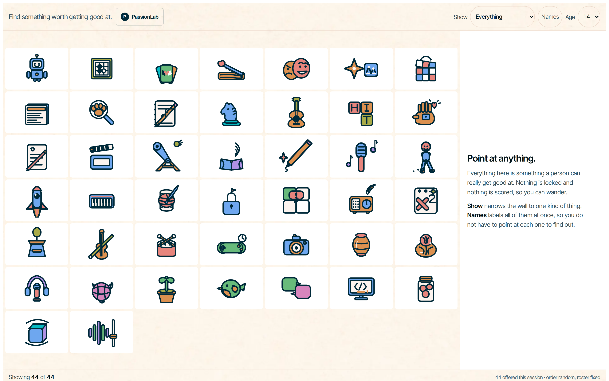
Thirty-six children aged 6 to 11, a fourteen-category hierarchy against forty-four flat concrete categories. Flat won at every grade.
Of twelve first-graders, zero found the "More Choices" control on their own.
So there is no pager, ever. Whatever is on this screen is, for a small child, the whole world. Every tile is one render from one scaffold, normalised to the same brightness, because a wall that reads a click as interest cannot afford a prettier tile.
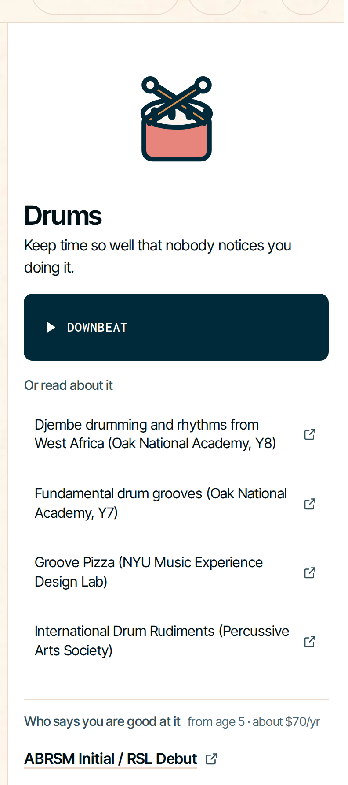
Something to do now. Somewhere to read. Someone who says you are good at it.
ABRSM grades this child, not us. All forty-four carry a real external judge: a federation, a competition, a licensing body.
A pursuit with nobody to judge it is just a topic.
| first click | Novelty is cheap. |
| time on task | Absorbed and stuck look identical. |
| same-day reopen | It has not survived a night away. |
| prompted return | We nudged him there. |
| how good the work is | A different question entirely. |
| return, later day | Nobody asked him to come back. |
Dwell is still recorded and shown to a guide. It never moves the number.
Dwell is non-monotonic in interest. Stronger performers stay as progress rises, weaker ones stay with the most familiar option. Same number, opposite meaning.
Multiply weight by minutes and a 40-minute session outweighs 40 returns, so duration silently becomes the dominant term.
At ages 7 to 8, in-session engagement failed to separate an intrinsically motivating task from a boring one. Only a delayed test did. Click-based idle detection separates active from idle, which is real, but not absorbed from struggling, which is the part that breaks it.
Each subject and way-of-working pair keeps two running totals. Evidence for, evidence against.
| What Ari did | Weight |
|---|---|
| Came back on a later day, unprompted | +1.0 |
| Redid it unasked · chose harder · recovered from failing · set his own scope | +0.5 |
| An adult saw him into the topic itself | +0.25 |
| Passed it over, having tried it before | −0.5 |
| Passed it over, never having tried it | −0.15 |
Everything halves in weight after 14 days. Press down for the formulas.
Priors start at α = β = 1, a coin flip, nudged by whether the subject exists in the child's environment and how they already do in it. Skips divide by the choice-set size, because picking one gadget out of seven is one decision, not six rejections.
Figures computed by the engine. Full derivation, every definition and all twenty constants: prediction-model.html, beside this deck.
Drums is on screen. He picks something else. Each pass costs him, because he has tried it before and chosen not to again.
His score goes down. That is the system working.
A model that only counts enthusiasm would have called this in week 2 and never revised. Week 4 is why the read is worth anything.
The roster leads with attention, not with names or numbers.
Two need her first, and each row says why. Ari is third, and he is ready.
The tag reads Synthetic, plus 1 ingested. It says out loud which data is real, because a reassurance that has quietly stopped being true is worse than none.
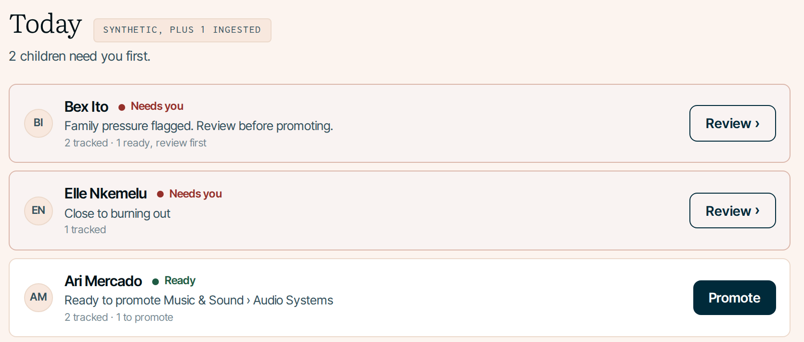
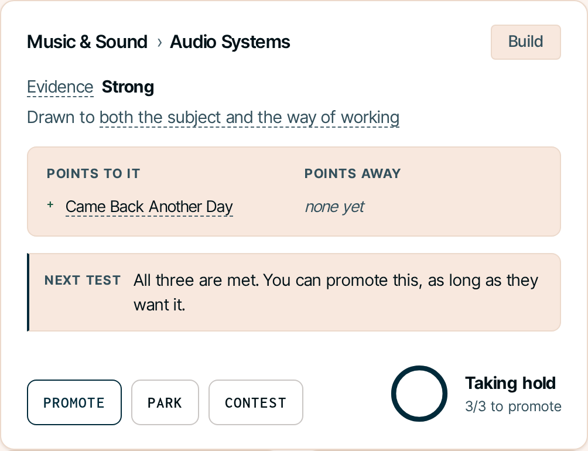
Evidence reads Strong. What points to it and what points away sit side by side.
The model does compute a number. The product refuses to show it, because a number on a child gets ranked.
Underneath, the next test tells her what would settle the question. The system proposes. She disposes.
Park sets it aside with a reason. Nothing is deleted and reopen brings it back. Contest flags it as doubtful, and the system sets that one itself when the score falls back through the threshold.
Nothing demotes on silence.
Ari is in the zone, so nothing changes. The same strip on Elle reads differently.
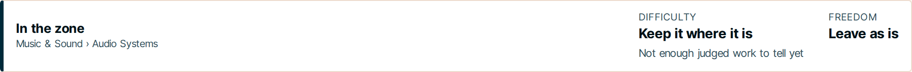
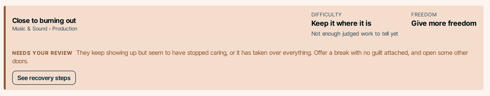
| State | Difficulty | Freedom |
|---|---|---|
| Close to burning out | hold | more |
| Early signs of exhaustion | hold | more |
| Quiet for a while | hold | steady |
| Watch closely | hold | more |
| Stretched too far | scaffold | steady |
| Not stretched enough | push | steady |
| In the zone | hold | steady |
The first four only fire once a specialization is real. A child still wandering the wall gets challenge advice and no pressure talk.
All three are met. You can promote this, as long as they want it.
The product says that, and then: you decide when it is ready. These three sit on top of the statistical gate, which passed weeks ago. Both have to hold.
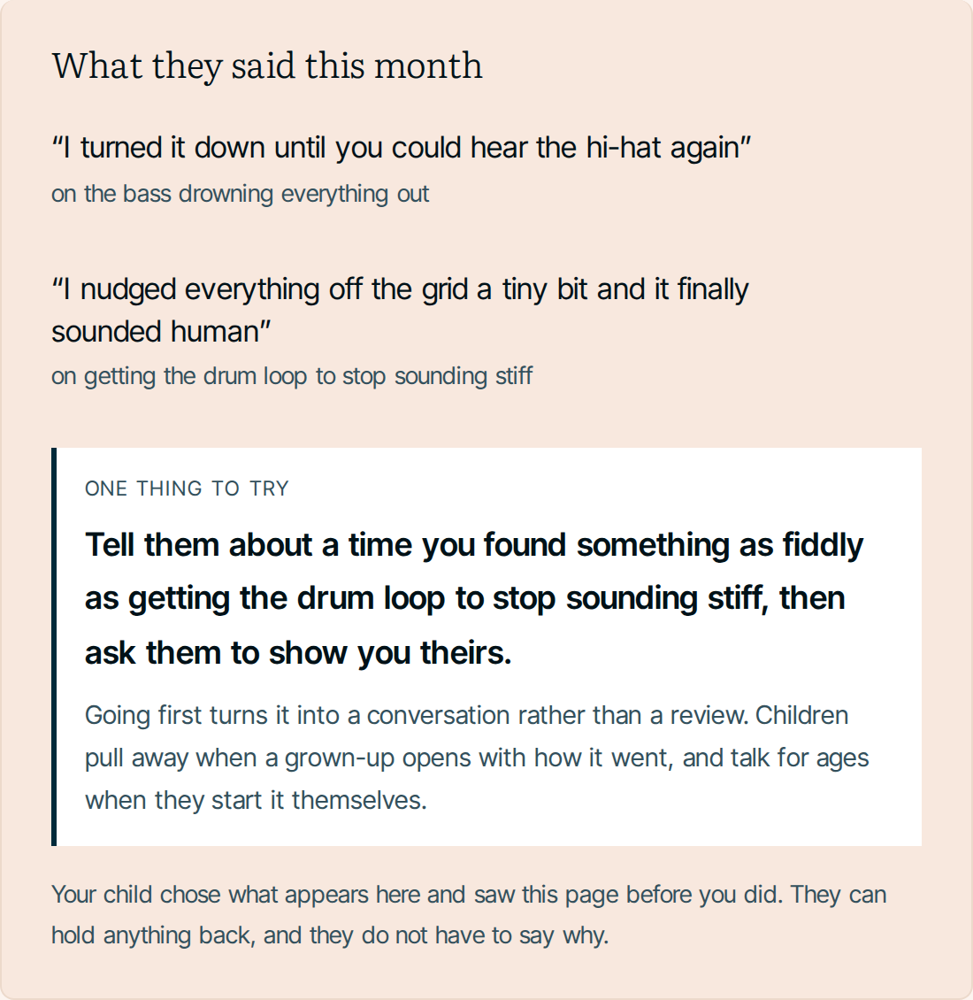
Quotes he chose. One thing to try, with the reason it works. Nothing derived, nothing scored.
He sees the page before she does and can hold anything back without saying why.
Ask her what he is into and the answer is worse than not asking.
A visible return metric would destroy the only unprompted signal we have.
Stage, mentor, audience and rest. Two days off a week, three months a year.
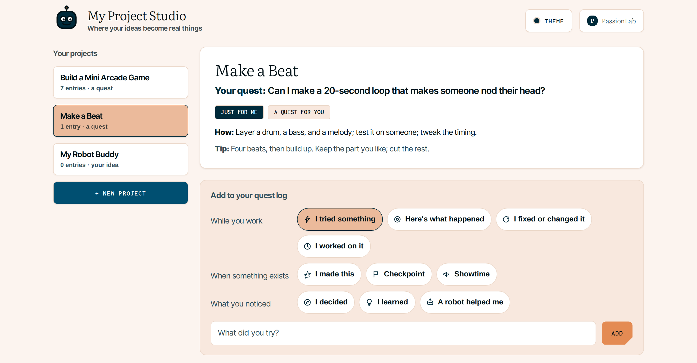
Every project is paired with EvidenceGraph, the proof layer we built alongside it.
An essay, a track, a repo. The result is silent on whether it was the child, an AI, a parent, a tutor, or paid help.
Version history is not the answer either. Timestamps are typed in and rewritable. That is a claim, not evidence.
Twelve steps: the plan, asking a tutor, a run that failed, the fix, a mentor review, and a human grade at the end.
This is the explorer's own demo record, a small game build, because that is what ships with it. Ari's project gets the identical treatment.
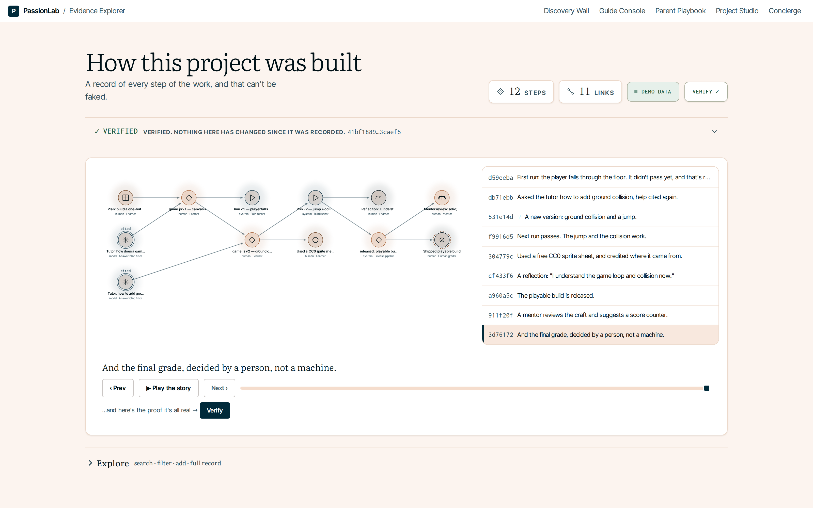
The whole graph rolls up to one root a verifier recomputes independently.
A button in the product tampers with a saved step. The check fails, the root mismatches, and the graph visibly fractures. Undo restores it.
Change one saved item and the check fails. That is how you know nothing has been edited since.
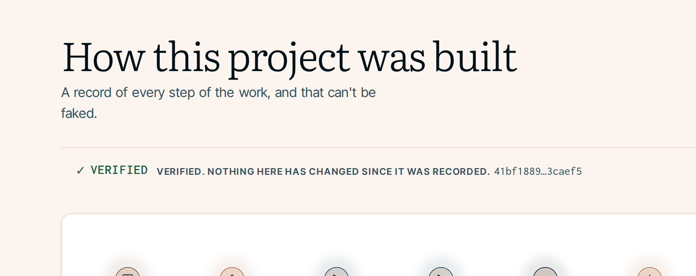
Any human judgment needs a named human actor. A model actor may only appear on declared assistance or review, never on a grade.
The engine owns every byte that gets hashed. The viewer is read-only and never recomputes trust, so the interface cannot fake a verdict.
The bigger one is not on that list. Steps are self-reported. If a child pastes someone else's work and logs it as their own, we faithfully record the lie and then prove nobody edited it.
A tamper-evident diary is not a lie detector. What closes that gap is the child talking about the work in front of a person, which is why a human grade sits at the end of every record. Separately: immutability is not a legal defence for refusing to delete, and we have not solved that either.
Weeks 1 and 4 matter as much as week 9. They are the two the child would never notice and the two most systems get wrong.
PassionLab produces the singular work. EvidenceGraph wraps every project in its provenance, and works anywhere someone has to trust work they did not watch being made.
A spike no one can verify is just a claim. A provenance system with nothing worth proving is just plumbing.
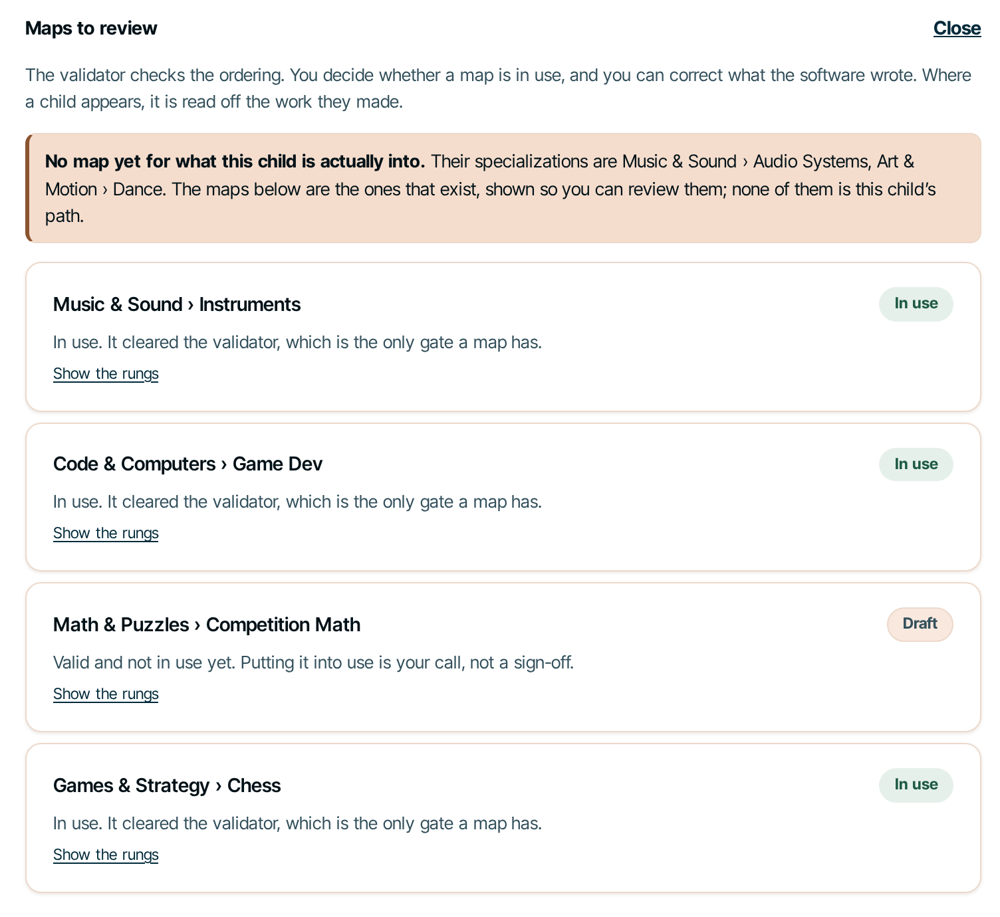
A map is a domain ladder: what comes after what, why that order, and what a child would make to show it. Maps are shared across children and the guide corrects them.
There is no approve button. A validator gates the ordering, because a guide should not be able to certify a domain sequence by clicking.
And it says out loud that Ari's own path has no map yet.
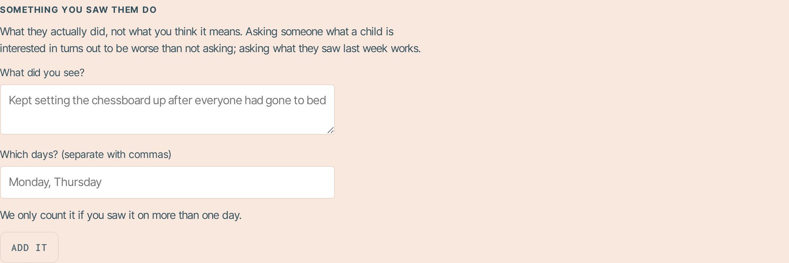
An adult report only counts if it names days. It caps at a quarter of a return and it cannot make a belief confident on its own.
Submit it and the panel says Written down. Nothing else. The channel is write-only, so no adult ever learns that their report moved something.
Fourteen sources survive in the bank. Each one changed something we built, and each carries a line naming the mechanism it produced.
Sources with no trace in the product were cut, including the study that opened the original document.
We are not anti-reward. Rewards are the right tool in the morning, where the target behavior is defined. Pay for throughput, get throughput.
Attach one to exploration and every child explores, so the signal measures prize-chasing. For the children who already had the interest, an expected tangible reward can crowd it out.
Once a spike is certified and the ascent begins, earned progress comes back. Phase-specific, not a philosophy.
Morning mastery data seeds afternoon priors, and only priors. It never gates what a child may explore.
A prior can shift how fast a cell climbs. It can never make a cell confident, because the confidence gate counts only evidence the child generated.
A pure engine holds content-addressing, Merkle roots and human-authority validation, behind storage ports, with a read-only viewer.
Its own repo, not a module of PassionLab. Projects arrive over the same HTTP API a connector would use, so adding a connector changes who creates a node, not the model.